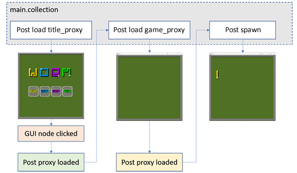

Tutorials for 2D games projects
Worm | Writing a script for the controller.
- In the assets panel, right click, 'main' and select, 'New...', 'Script'.
- Name the script, 'main'.
- Change the functions to handle the collection proxies.
function init(self)
msg.post(".", "acquire_input_focus")
self.worms_alive = -1
self.delay = 0
-- Show the title screen when the game is loaded
msg.post("#title_proxy", "load")
self.current_collection = "#title_proxy"
end
function final(self)
msg.post(".", "release_input_focus")
end
function on_message(self, message_id, message, sender)
-- Show the collection once loaded into memory
if message_id == hash("proxy_loaded") then
msg.post(sender, "enable")
if self.worms_alive > 0 then
-- Insert code to spawn players here later
-- Insert code to spawn food here later
end
-- Load the correct collection when a message is received
elseif message_id == hash("show title screen") then
-- Title screen
msg.post(self.current_collection, "unload")
msg.post("#title_proxy", "load")
self.current_collection = "#title_proxy"
elseif message_id == hash("1up") then
-- 1 player
msg.post(self.current_collection, "unload")
msg.post("#game_proxy", "load")
self.current_collection = "#game_proxy"
self.worms_alive = 1
elseif message_id == hash("2up") then
-- 2 player
msg.post(self.current_collection, "unload")
msg.post("#game_proxy", "load")
self.current_collection = "#game_proxy"
self.worms_alive = 2
end
end
The input focus is aquired. A number of worms alive attribute is set to -1. It can't be zero because that will be used for the game over condition later.
The delay attribute will also be used later to introduce a pause in the code. For example before switching back to the title screen when the game is over.
This was just a bit of thinking ahead to avoid too many awkward to follow instructions later!
The script displays the title screen when the game loads.
The script sits in the background listening for messages from other scripts.
If it receives a message, "show title screen", it unloads the game screen collection and loads the title screen collection instead.
If it receives a message, "1up" or "2up" it unloads the title screen collection and loads the game screen collection. It also sets the number of worms alive to 1 or 2.
This message is received from buttons that we will make on the title screen interface. Once the game screen is loaded it then sends a message to the game screen script telling it to spawn each player.
This is an illustration of how the message passing will work:

You can only pass a message to a collection that has confirmed it has loaded. This makes it a little more complicated than simply sending a message to load the collection followed by a message to spawn the worm or worms. We have to wait for confirmation that the collection loaded first.
- Save the changes by pressing CTRL-S or 'File', 'Save All'.
- Attach the main.script file to the controller game object in main.collection.
Step-by-step guide
- In the assets panel, in the 'main' folder, double click, 'main.collection'.
- In the outline panel, right click, 'controller' and select, 'Add Component File'.
- Select, '/main/main.script' and click, 'OK'.
If you run the game at this point you will only see a blank screen. The blank title screen. The next stage is to build a simple interface for our title screen so that the number of players can be selected. Stage 2a >
 Craig'n'Dave | Version 1.3
Craig'n'Dave | Version 1.3